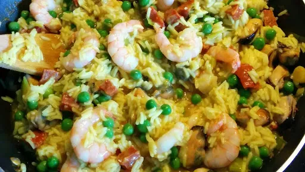

Paella
30 mins
Serves 4
Spanish

Think paella's too much of a challenge? Think again, this easy recipe makes it foolproof and is full of fantastic flavour.
Ingredients
-
1
tbsp olive oil
-
1
leek or onion, sliced
-
110
g chorizo, chopped
-
1
tsp tumeric
-
300
g long grain rice
-
1
l hot fish or chicken stock
-
200
g frozen peas
-
400
g seafood mix
Instructions
- Heat the oil in a deep frying pan, then soften the leek for 5 mins without browning.
- Add the chorizo and fry until it releases its oils.
- Stir in the turmeric and rice until coated by the oils, then pour in the stock. Bring to the boil, then simmer for 15 mins, stirring occasionally.
- Tip in the peas and cook for 5 mins, then stir in the seafood to heat through for a final 2 mins cooking or until rice is cooked.
- Check for seasoning and serve immediately with lemon wedges.
-
kcal
518
-
fat
12 g
-
saturates
0.4 g
-
carbs
75 g
-
sugar
5 g
-
fibre
5 g
-
protein
32 g
-
salt
1.29 g
www.bbcgoodfood.com
Short Link
Long Link